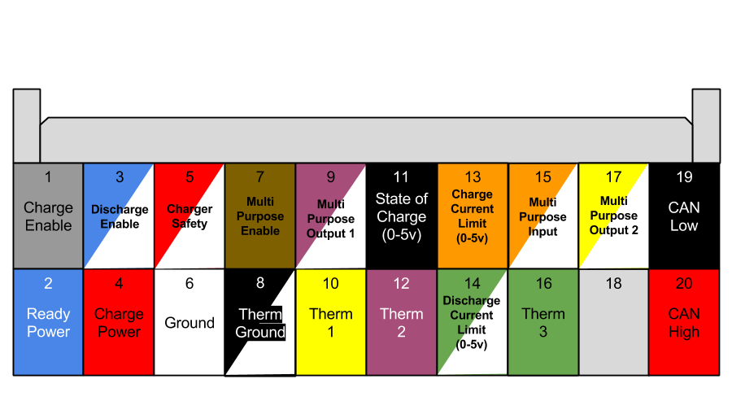

Note: Perspective is from back of connector with wires coming out towards the viewer.
Note: This diagram is intended to be used for quick reference only. Please consult the BMS wiring manual for details on the pinout and wiring instructions.
| < Appendix F: Wiring Diagrams | Cell Tap Diagram > |